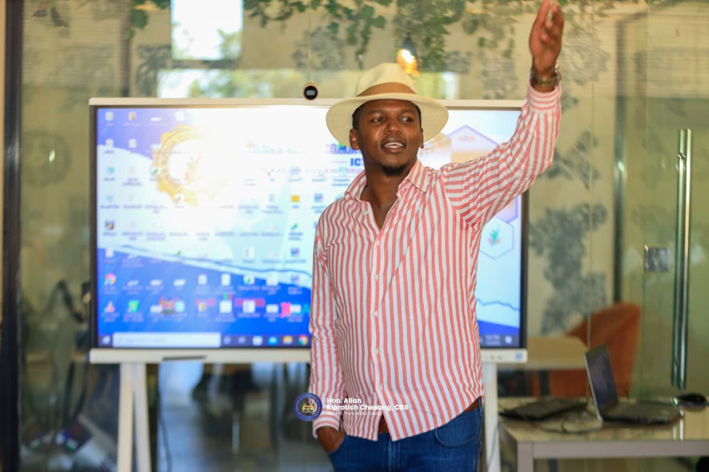

Digital skills are no longer a luxury — they are a necessity. Every young person in Trans-Nzoia deserves access to the tools, knowledge and opportunities that technology brings.
This ICT Hub was built for you. Whether you are a student, a small business owner, a job seeker or simply someone who wants to grow — there is a place for you here. The future belongs to those who prepare for it today.
Inspiration for the Digital Generation
"Innovation distinguishes between a leader and a follower."Steve Jobs
The best way to predict
the future is to
create it.Peter Drucker
Any sufficiently advanced
technology is
indistinguishable
from magic.Arthur C. Clarke
It is not about ideas.
It is about making
ideas happen.Scott Belsky
The computer was born
to solve problems
that did not
exist before.Bill Gates
Digital skills
are the new literacy.
Those who master them
shape tomorrow.
To provide affordable, high-quality ICT training to individuals, students and professionals in Trans-Nzoia County, enabling them to participate fully in the digital economy.
A digitally empowered Trans-Nzoia community where every person has access to the technology skills needed to improve their lives and livelihoods.
To train 10,000 community members in practical digital skills by 2030, creating jobs, businesses and a thriving digital economy across Trans-Nzoia County.
Conveniently located in the heart of Kitale Town, accessible from all parts of Trans-Nzoia County.
5 minutes walk heading towards the town centre. Look for the ICT Hub banner.
Monday to Friday: 7:00am to 9:00pm
Saturday: 8:00am to 6:00pm
Sunday: Closed
+254 700 000 000
info@transnzoiaict.co.ke
Experienced professionals dedicated to your digital growth.